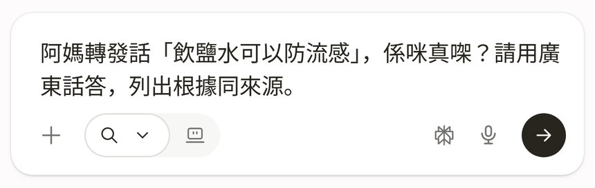
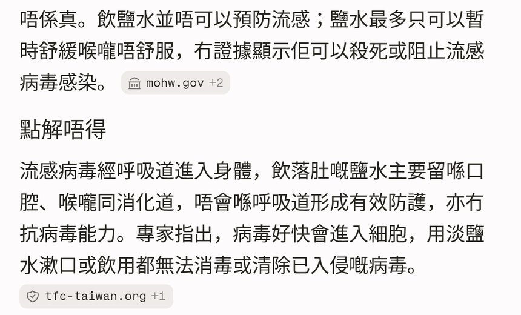
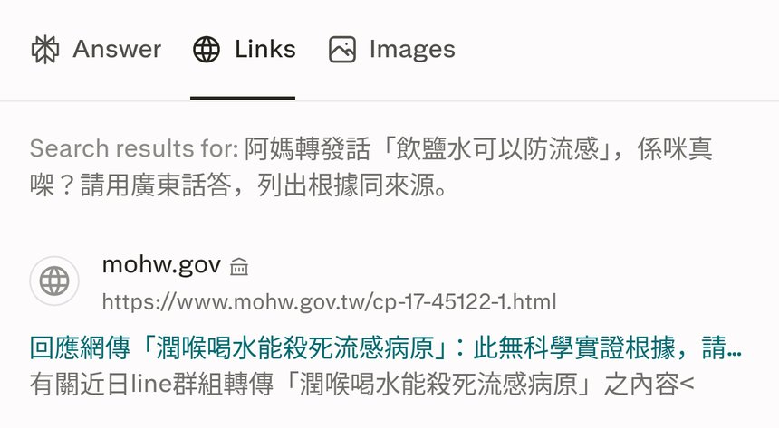

跟 Reel 用 perplexity.ai（唔使登入）查證長輩轉發嘅「飲鹽水可以防流感」：喺 Ask anything 打問題撳箭咀送出，睇答案第一句結論同「點解唔得」逐點根據，再撳「Links」分頁逐個來源撳返入原文核實。附真實畫面截圖、可抄問題，同健康資訊要以衞生署／醫生意見為準嘅提醒。
Reel 一句講晒：阿媽又轉發健康秘方？Perplexity 一問，廣東話答你有冇根據，仲列埋來源
你會學到
- 點樣喺 perplexity.ai 唔登入打問題，要求用廣東話答同列來源
- 點樣睇答案嘅結論同逐點根據，每段後面嘅來源標籤
- 撳「Links」分頁睇晒來源，撳返入原文自己核實
開始前準備
- 手機或電腦瀏覽器開 perplexity.ai（示範冇登入）
- 長輩轉發嗰句說法（例：「飲鹽水可以防流感」），原文照抄最準
- 預留幾分鐘撳入來源原文睇，唔好淨係睇 AI 摘要
3 步做法
打問題撳送出：perplexity.ai 唔使登入，喺「Ask anything…」打：「阿媽轉發話「飲鹽水可以防流感」，係咪真㗎？請用廣東話答，列出根據同來源。」，撳右下角箭咀送出。
問題入面講明「用廣東話答」同「列出根據同來源」，答案會照住呢個格式出。
送出掣係右下角黑色圓形箭咀（冇字）。Perplexity 官方說明：唔登入可以用部分功能，Pro Search、上載檔案、儲存對話就要登入。

真實畫面（2026-10-07 自行截圖，冇登入）：問題打好，撳右下角黑色箭咀送出。 睇點解唔得：第一句就答「唔係真」，下面「點解唔得」「飲太多仲有風險」逐點講，每段後面有來源。
示範答案第一句：「唔係真。飲鹽水並唔可以預防流感」，跟住分「點解唔得」同「飲太多仲有風險」兩段講原因；每段尾有細細嘅來源標籤（示範見到 mohw.gov、tfc-taiwan.org）。
答案係 AI 整理網上資料，可能出錯；健康問題以衞生署或醫生意見為準，唔好當醫療建議。

真實畫面（2026-10-07 自行截圖）：第一句結論「唔係真」，下面「點解唔得」逐點講，每段尾有來源標籤。 撳 Links 睇來源：答案上面撳「Links」，列晒衞生部門、事實查證網站等來源，撳返入原文核實。
「Links」分頁喺「Answer」右邊（英文介面）。示範列出 mohw.gov（政府網站）同幾個事實查核網站等來源。
逐個撳入原文睇清楚係咪真係講緊同一件事、幾時出；官方說明亦講答案附引用係方便你自己核對。

真實畫面（2026-10-07 自行截圖）：撳「Links」分頁，第一個來源係 mohw.gov；撳入去睇原文。
可抄 Prompt
Reel 用嘅問題
阿媽轉發話「飲鹽水可以防流感」，係咪真㗎？請用廣東話答，列出根據同來源。
換成其他轉發說法
我收到轉發話「（貼上轉發原文）」，係咪真㗎？請用廣東話答，先講結論，再列出根據同來源。
要求優先睇官方來源
請優先引用政府衞生部門或醫學機構嘅資料，用廣東話講呢個說法有冇根據：「（貼上轉發原文）」。
常見錯誤／注意事項
- 淨係睇第一句：結論之後嘅根據同來源先係重點，撳入原文睇清楚。
- 當 AI 答案係醫療建議：AI 可能出錯；健康問題以衞生署或醫生意見為準。
- 唔講明要來源：問題加「列出根據同來源」，答案先會清楚標來源，方便核實。
- 以為唔登入乜都用得：Perplexity 官方講唔登入只用到部分功能，Pro Search、上載檔案、儲存對話要登入。
官方說明
- How does Perplexity work?（Perplexity Help Center）
官方講每個答案附編號引用，方便你自己核對 - Understanding source labels（Perplexity Help Center）
官方講來源標籤（Government／Academic／Trusted）係按網站評，唔係逐頁保證 - Account Management and Security（Perplexity Help Center）
官方：唔登入都用得，但只得部分功能；Pro Search、上載檔案、儲存對話要登入
（以上連結當日逐條打開核對；介面同額度可能更新，以官方為準）
原帖
睇原 Reel ↗（2026-10-08 發佈）